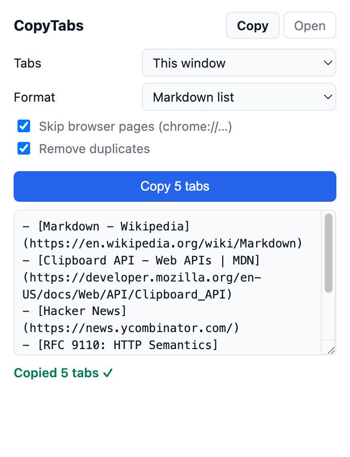

Copy every open tab in one click
Markdown links, plain URLs, HTML, CSV or JSON. Paste a list later to reopen them all.
Markdown - Wikipedia
Clipboard API - Web APIs | MDN
Hacker News
RFC 9110: HTTP Semantics
Hyperlink - Wikipedia
en.wikipedia.org/wiki/Markdown

Pasted into your notes
Markdown
URLs
HTML
CSV
JSON
Reopen list